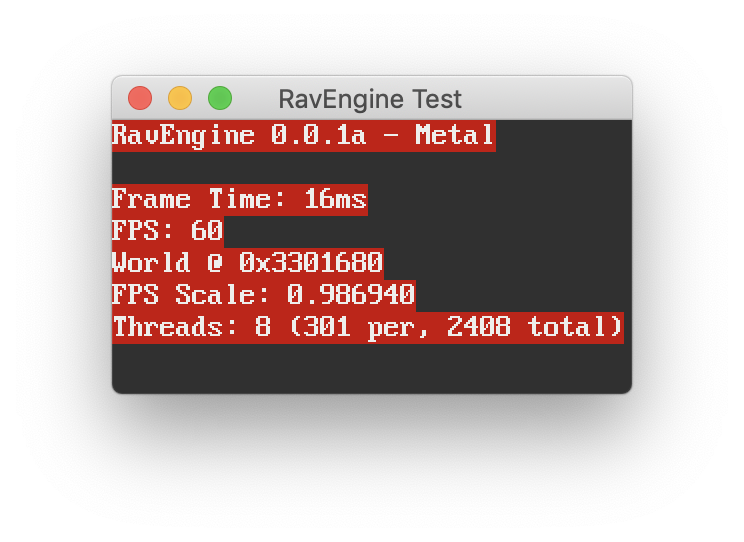
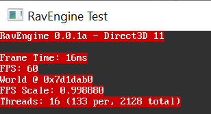

Up until this point, my engine had no real rendering, other than diagnostic text.

One does not write a game engine without any graphics programming experience. I decided to learn
some basic OpenGL so that I knew how the architecture and workflow worked.
learnopengl.com is a fantastic resource for people with zero
background in graphics programming to pick up OpenGL quickly, and I used it to learn how to implement a simple Phong
lighting model. The site guided me how to add animation and texturing, and I created this "matrix crates" program:
At the end, I was able to load a complex model from a file and draw it with Phong shading!
However, I do not want to be stuck on OpenGL. I want to support modern graphics APIs like Vulkan, Metal, and DirectX.
The issue is two of these three are platform-specific, and Vulkan is not supported everywhere, but I do not want to write
my render engine multiple times for each backend.
Enter the star of this show: abstraction libraries. In total, I tried to integrate 5 different libraries before settling on one.
I had a few requirements for the ideal library:
Must support Metal. I want to support Mac and iOS. I also do not want the library to use MoltenVK for this.
Must support Vulkan or DirectX on Windows.
Must support Vulkan on Linux. I currently do not plan to have an OpenGL fallback for this platform
DiligentEngine is a low-level graphics library. It abstracts the APIs, but you as a programmer still deal with shader programs and buffers.
Initially, this one seemed promising. It has excellent documentation and samples, and CMake integration is extremely simple.
However, it didn't meet one of my criteria: No Metal support. It does technically support metal through MoltenVK, but this
proved to be both slow and hit-or-miss, judging by the performance of the samples. In addition, this library is massive and takes forever to download and compile.
BGFX, Part One
BGFX is a low-level graphics library. It supports an incredible number of platforms, from the PlayStation 4 to the Raspberry Pi.
I didn't like this one initially, but that ended up being entirely because of my own ineptitude when it came to graphics.
At this point I was still very new to drawing objects and was still wrapping my head around vertex and index buffers and shaders.
Below shows the first thing RavEngine ever rendered:
This is supposed to be a cube. Doesn't look so good does it? I struggled with byte alignment for months in this library and all the others simply because
I could not wrap my head around it. Using this library I came to terms with matrix math and got some vertex spaghetti to render:
Since I didn't understand this library, I decided to look for other options. What I didn't know at the time was the BGFX story did not end here.
Ogre NEXT
Ogre NEXT is a high-level object-oriented rendering library, and a freshly-written successor to the original Ogre that uses modern rendering APIs.
High-level graphics libraries deal with concepts such as lights and meshes, rather than buffers and contexts.
I had good feelings about this one too. Scrap Mechanic, one of my favorite games, uses this rendering library in its custom engine, with
beautiful results. However, I ran into hitches when trying to integrate it. Its over-emphasis on factory functions made it extremely unfriendly to
my hybrid ECS-OOP design. In addition, it requires programmers to create objects in a specific order in a specific way, a restriction I didn't want to impose in my engine.
I also could not get it to work on Mac.
Google Filament
Like Ogre, Filament is a high-level rendering library. Unlike Ogre, it is entirely data-oriented. Ironically, this would also be its downfall.
I was able to draw wireframe objects in Filament, but I ran into snags. It too requires object construction in a specific order via
factory functions, and its Entity-Component-System was not thread-safe and yielded incorrect results when called on multiple threads, even with
proper locking! In addition, its samples are extremely hard to understand, and it has zero API documentation. Instead, Google provides a generic
book about rendering instead of actual documentation about how to use their library.
With my wireframe rendering in Filament, I was able to correct my broken Physics solving implementation adding substepping and improving efficiency.
I noticed that Filament performs object-level culling instead of fragment-level.
This is because Filament was designed for Android first, and GPUs in Android phones commonly do not perform fragment culling efficiently.
Like Diligent, Filament is massive and takes forever to compile. In fact, it uses more than 16GB of my RAM on Windows to compile! I realized here that
high level rendering APIs were not the way to go. They are too bulky and require too many compromises to work.
MethaneKit
MethaneKit is a low-level graphics library. This one seems very promising, if I had started this project 2 years into the future instead of 3 months ago.
This one supports only DirectX 12 and Metal, and supports only Windows 10 and macOS. The developer is very active and the library seems quite capable, but
after using Unity, I am very hesitant to integrate new unfinished software into my engine. The developer is very knowledgeable and I recommend following this
library closely.
LLGL
LLGL is a low-level "thin-abstraction" graphics library. It requires some backend-specific code, but a fraction of what would be required
if I decided to write this without a library. After some hickups with triangle winding direction, I fairly quickly got a cube rendering.
Unlike the library I eventually settled on, this one provides no
shader compiler. I decided to write my own shader cross-compiler by employing glslang and SPIRV-Cross I actually got quite
far with my transpiler and had working outputs for Metal, Vulkan, and DirectX. However, because LLGL only provides a thin abstraction, all windowing and layer
management I would have to write for each platform. I got it running on Windows, but ran into problems getting the Metal layer to work on Mac. In addition, this
library was forcing me to violate one of my core tenets for this project: Don't reinvent the wheel. Below shows my cubes demo, with vertex color shading.
BGFX Part 2
Thanos would like a word with me. I could not live with my failure, so where did that bring me? Back to BGFX. Ironically, BGFX had everything I wanted from a rendering API
and I could not see the forest for the trees. It supports a ton of platforms, has a shader compiler, requires zero API-specific code, and has no restrictions on
object construction order nor does it have bizzare threading rules. My only complaint with it is its relatively poor documentation, but given the lineup we have here,
it actually doesn't fair too badly. I ended up wrapping its tools in CMake, which you can read in a future blog post. I transitioned from LLGL to BGFX completely within
2 days. Shown below is my physics cubes sample in all its vertex-colored glory: